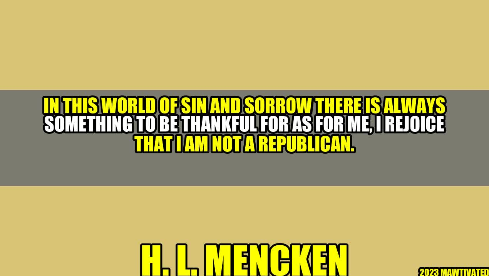

Why I Rejoice That I Am Not A Republican

There was a time in my life when I was a staunch Republican. I believed that the party stood for values that aligned with my beliefs, and I was proud to support them. However, as I have grown older and wiser, I have come to realize that the Republican party no longer holds the same values that it once did. In fact, I rejoice that I am not a Republican. Allow me to explain why.
An Inspiring Story
It was a beautiful day in May, and I was walking through my neighborhood when I saw a group of volunteers cleaning up the park. As I got closer, I realized they were all Republicans, and I felt a twinge of guilt for having such negative feelings towards them. One of the volunteers noticed me hesitating and came over to talk to me. We chatted for a few minutes, and I was struck by how kind and sincere he was. It was then that I realized that while I may not agree with their politics, Republicans are still people, and we should treat them with the same respect and kindness we would hope to receive in return.
Author - H. L. Mencken
H. L. Mencken was a journalist, critic, and scholar famous for his witty and satirical writing. He was also a prominent figure in the Republican party during the early 20th century. However, he became disillusioned with the party and wrote the famous quotation, "In this world of sin and sorrow, there is always something to be thankful for. As for me, I rejoice that I am not a Republican."
Reasons to Rejoice
- Values: The Republican party used to stand for values like personal responsibility, fiscal conservatism, and small government. However, in recent years, they have become a party that is more concerned with power and winning at all costs. This is not a party that I can support.
- Climate Change: Climate change is one of the biggest threats facing our planet, and yet the Republican party refuses to acknowledge it. This is not only short-sighted; it is dangerous. We need leaders who will take this issue seriously and work to mitigate its impact.
- Equality: The Republican party does not have a good track record when it comes to issues of equality. They have consistently opposed LGBTQ rights, reproductive rights, and civil rights for people of color. This is not a party that believes in equality for all people.
Conclusion: Three Ways to Make a Difference
- Vote: The most important thing you can do is to vote. Make sure that you research the candidates and the issues before you go to the polls. Do not vote straight-ticket, but instead, choose the candidates that best represent your values.
- Get Involved: Join a political action group or volunteer for a campaign. This is a great way to make a difference and to meet like-minded people who share your values.
- Speak Out: Do not be afraid to speak up when you see something that is not right. Write letters to your representatives, attend town hall meetings, and use social media to spread your message. Every voice counts, and together, we can make a difference.
Hashtags: #NotARepublican #ValuesMatter #ClimateChange #Equality #MakeADifference
SEO Keywords: Republican Party, Values, Climate Change, Equality, Make a Difference
Article Category: Politics
Curated by Team Akash.Mittal.Blog
Curated by Team Akash.Mittal.Blog
Share on Twitter Share on LinkedIn